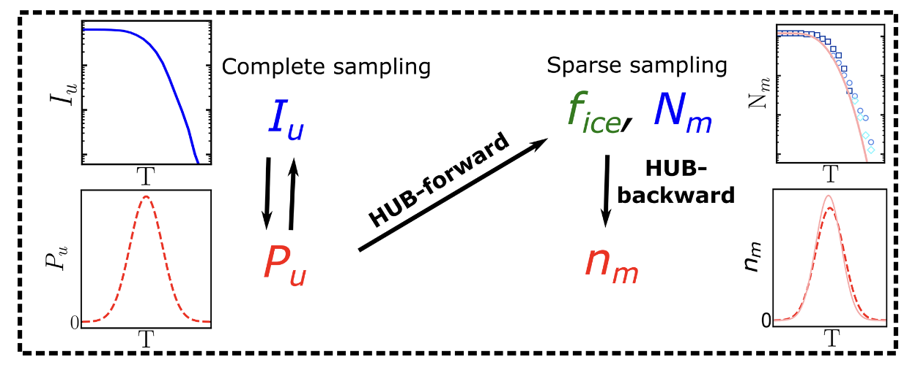
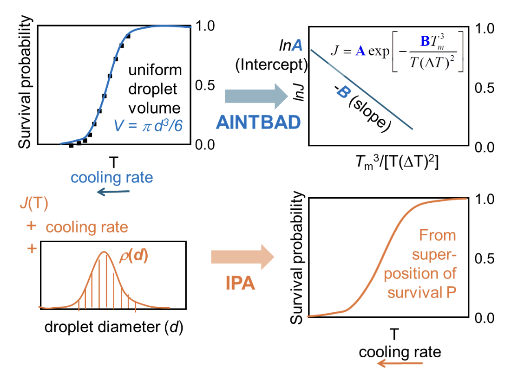
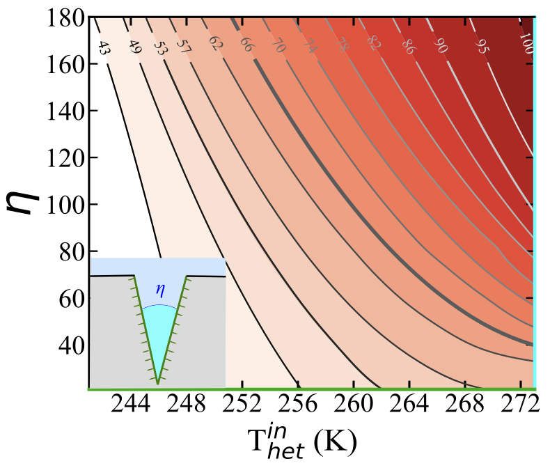

Codes & Scripts

HUB — Heterogeneous Ice NucleationI built two scripts to predict droplet-freezing curves and infer the underlying distribution of nucleation temperatures from experimental data.

AINTBAD & IPA — Homogeneous Ice NucleationI co-developed tools to quantify how differences in droplet volume affect estimates of homogeneous ice nucleation rates.

ice-WEDGE — Ice Nucleation in Wedge-Shaped PoresI used Gaussian process regression to predict ice nucleation temperatures from the angle and depth of a pore.